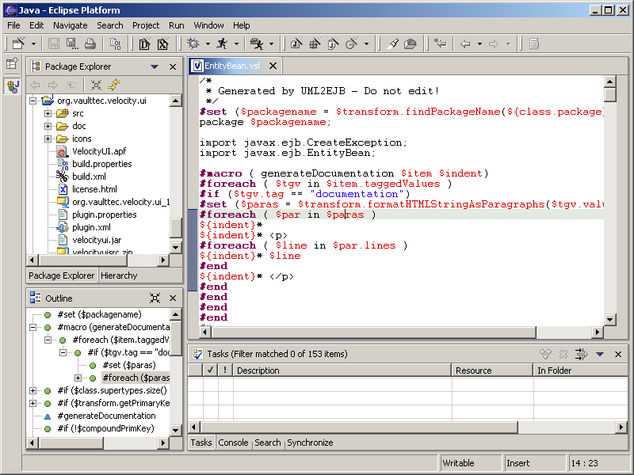

Velocity UI for Eclipse
This project leverages the
Eclipse platform
(v3.x) by adding support for the template/scripting engine
Velocity.
It provides the following plugins:
- org.apache.velocity
- Velocity binaries (currently v1.7.0) packaged as an Eclipse plugin
- org.vaulttec.velocity.ui
- Velocity-aware text editor (associated to files with extensions '*.vsl' or '*.vm')
with outline view

Editor Features
- Syntax-highlight for Velocity Template Language (VTL)
- Outline view with hierarchy of VTL directives and Velocimacro references
- Content assist for VTL directives (Screenshot)
and references (Screenshot) -> auto-activation
after the character '#' or '$' or manually via keyboard shortcut Ctrl+Space
- Automatic template validation while typing (the first syntax error is show in task
list and the according line is marked in annotation column)
-> Screenshot
- Annotation hover with definition of references
(Screenshot) and template syntax errors
(Screenshot)
- Go to definition of variable or Velocimacro reference under current cursor position
(via navigate + context menu or keyboard shortcut F3)
Use Workbench's navigation history to return to previous location
(keyboard shortcut 'Alt + Arrow Left').
- Comment and uncomment blocks (via Ctrl+/ and Ctrl+\)
- Preference pages for definition of Velocity counter name and user-defined
Velocity directives (Screenshot)
- Preference pages for color settings of the editor's syntax highlighting
(Screenshot)
- Preference pages for Velocimacro library
(Screenshot)
Installation
Via Eclipse Update Manager
Online updates are available on
http://veloedit.sourceforge.net/updates/.
Define a site bookmark in Eclipse's Update Manager view
(Screenshot), navigate to the update site via this
bookmark (Screenshot) and install the Velocity UI feature.
This update site can also be downloaded from
SourceForge
and used locally.
Manually
Download the archives org.apache.velocity_x.x.x.zip and
org.vaulttec.velocity.ui_x.x.x.zip from
here
and unzip them in your Eclipse plugin directory "<eclipse install path>/plugins/".

{kind=link}
{kind=link}
{kind=link}
{kind=link}
{kind=link}
{kind=link}
{kind=link}
{kind=link}